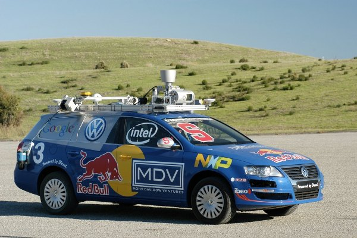

Staley was stanfords entry into the Darpa Grand Challege in 2005. The Stanley uses an array of sensors including mono and strero camreas,GPS,Laidar,encoders and sonar to detect where it is and what is around it. Stanley then uses the information it gathers from its surroundings along with preprogramed route information to plan a way to autonomuly drive to its destination. Stanley then Acts by streeing and controlling the speed at which the robot is moving.